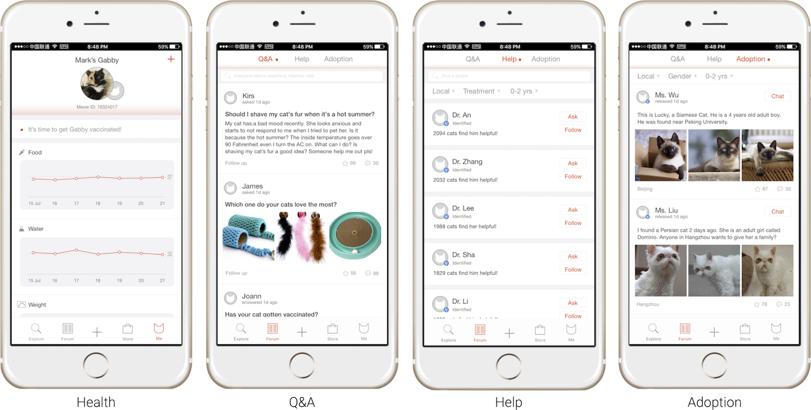
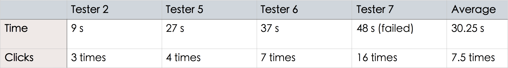
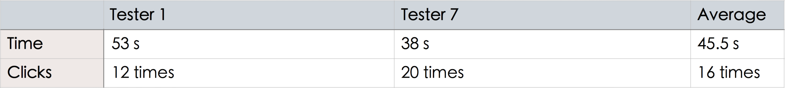
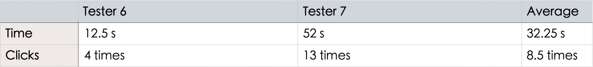

User Study
SURVEY & RESULT ANALYSIS
After the initial brainstorming session, we designed questions and conducted online surveys to learn about users’ problems and needs. We separated our potential users into two segments - cat owners and the others, especially cat lovers who do not raise cats for various reasons. Besides basic questions about gender, age group and occupation, we had questions focusing on studying the current problems of cat owners, and other cat lover’s interests as well as their opinions about cat adoption. There were 140 respondents in total, consisting of 41 male and 99 female.
Solutions
PRODUCT DESCRIPTION
For cat owners
"Meow Diary" provides cat owners with a one-stop solution to take care of their cats, including the following features:
- Record & Post cats' activities
- Track & analyze cats' health condition
- Consult vets online & make appointment
- Shop for cats online
- Communicate with other cat owners in the online community
For cat lovers
People who do not have cats can use the app to:
- Follow cats: users can follow their favorite cats and pet their "cloud cats" (new phenomenon in China)
- Post/View information about stray cats and adopt stray cats
Prototype
"MEOW DIARY" APP DESIGN

Usability Test
COGNITIVE WALKTHROUGH & THINK-ALOUD
The usability test was conducted with 8 users in total using cognitive walkthrough and think-aloud protocol. Seven groups of valid results were analysed.
Action analysis

Cognitive Walkthrough
Task 1: Look for health data of the cat
Task 2: Look for the online vet consultation function
Task 3: Look for the “memory” page
Think-aloud
Feedback 1
Users do not understand "Trend" and may be confused about "Following" and "Trend".
Suggestion: Change "Trend" to a more representative word like "Cat stars”
Feedback 2
“Help” & “Adoption” functions are hard to discover.
Suggestion: Combine online vet consultation with “Health” function to provide holistic health services. Add tooltips to remind users about the adoption function when users open the app for the first time.
Feedback 3
Users find "Health" function hard to discover (user need to click the icon).
Suggestion: Since this is one of the most useful functions to cat owners and is also profitable, we can consider putting it on the cat owners' main page.